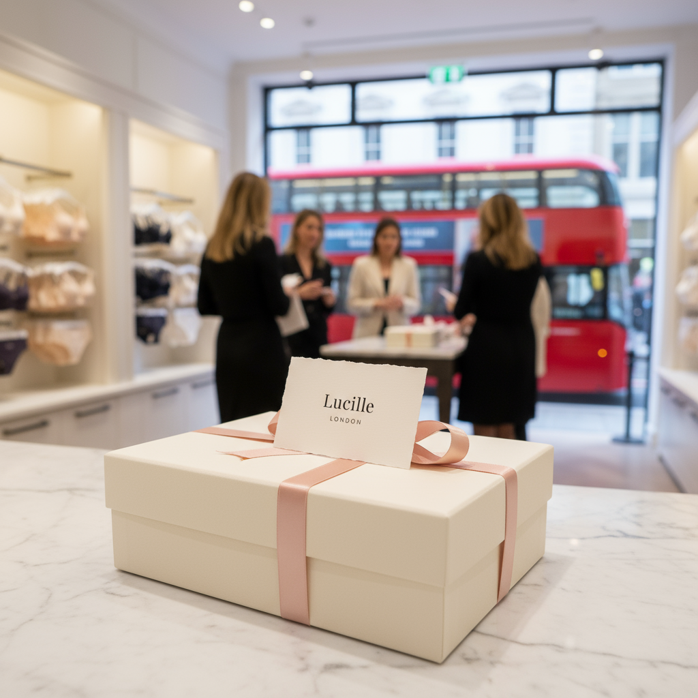

Skip to content
Ged Devine
Work
About
Contact
Work
About
Contact
I build the opportunity with intent, hierarchy and interaction - then I use AI to shape nuance, widen options, and sharpen measurable outcomes.
WORK
View all work

Lucille London
Brand · UX
KINETIK
Smartwear UX
Performance product
Northline Care
Service UX
Digital health
Open Lucille case study →